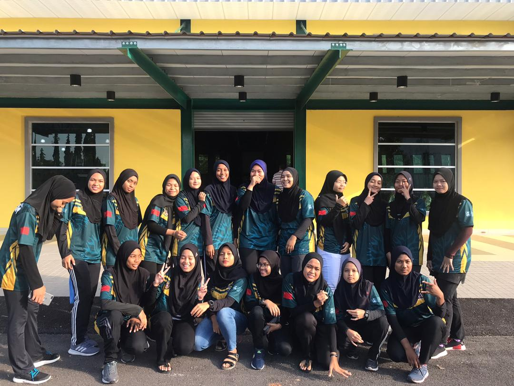
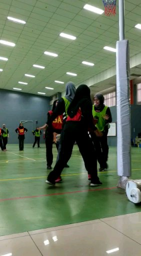
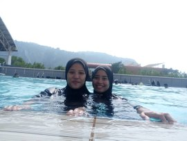
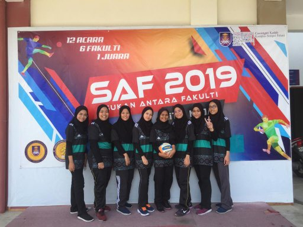
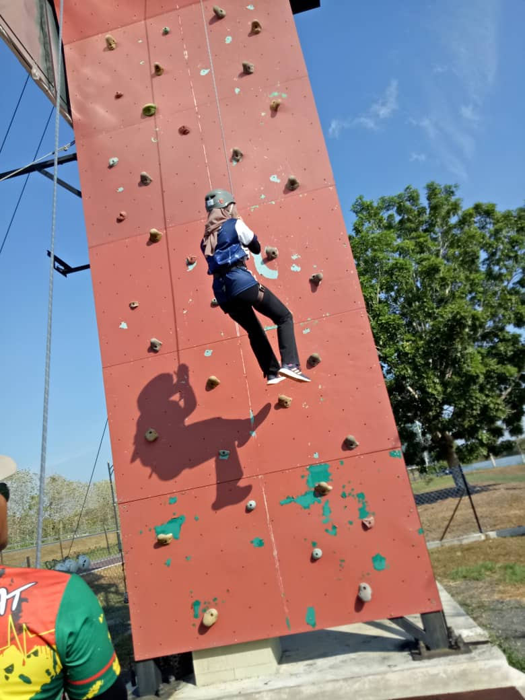
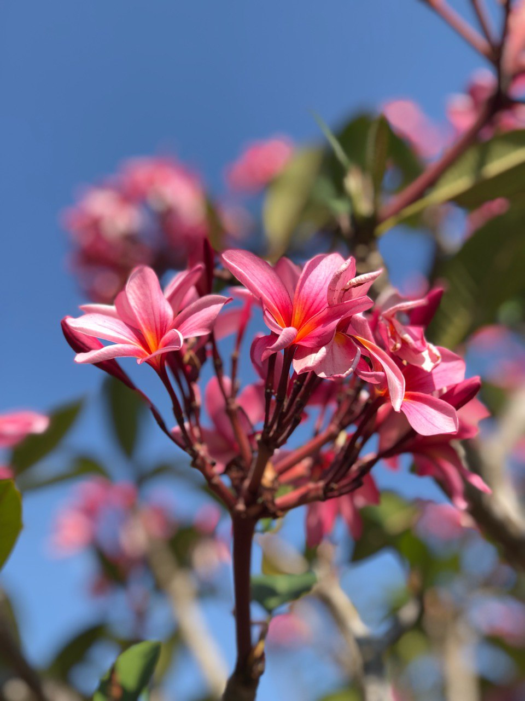
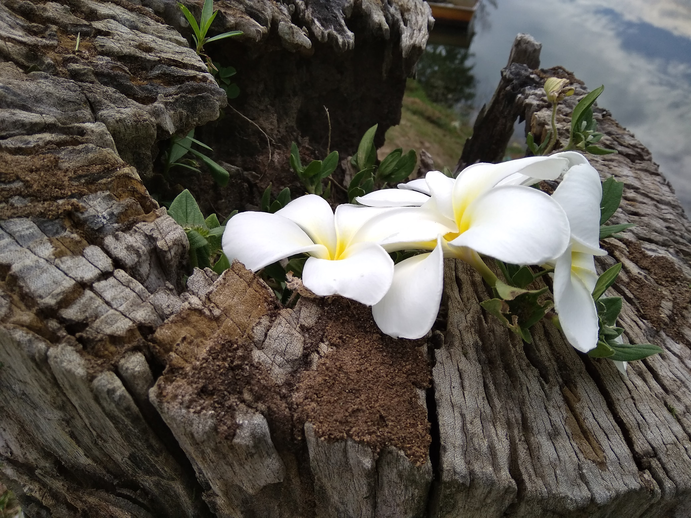
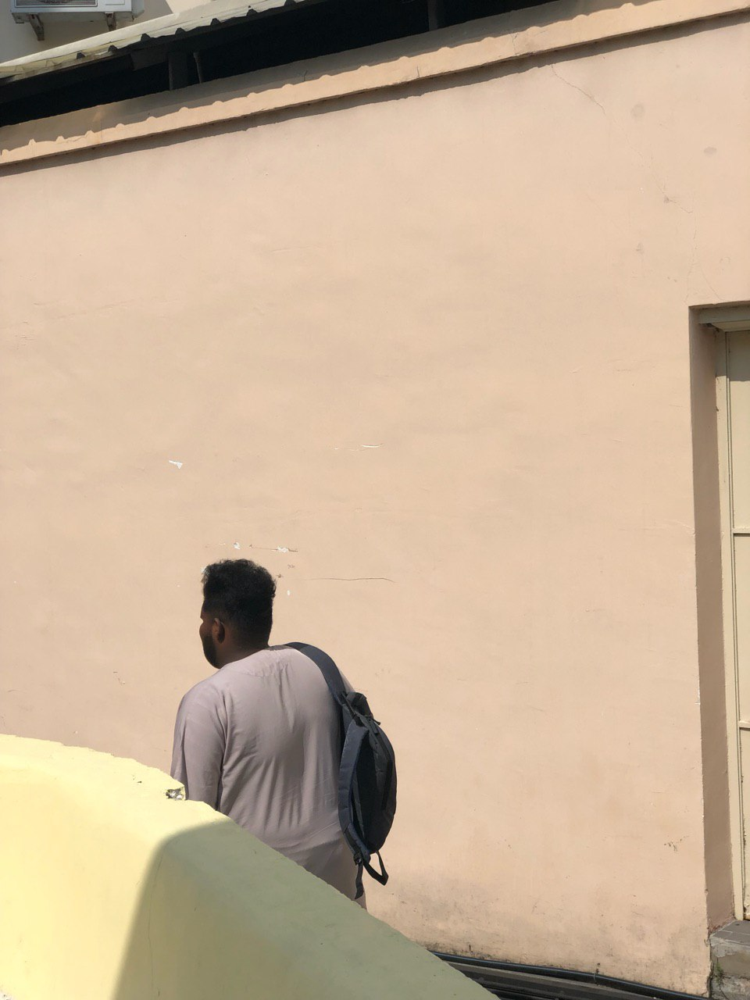
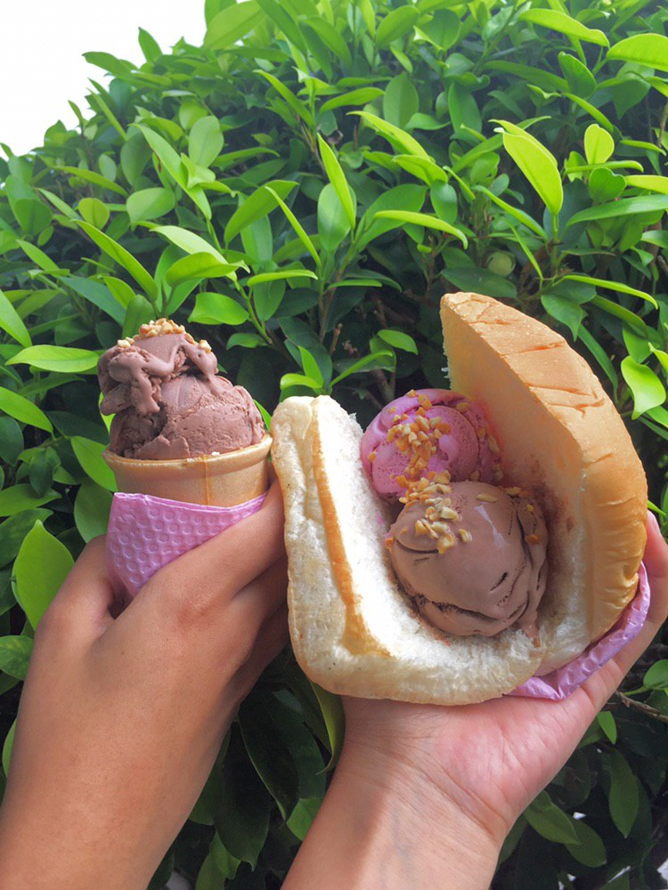
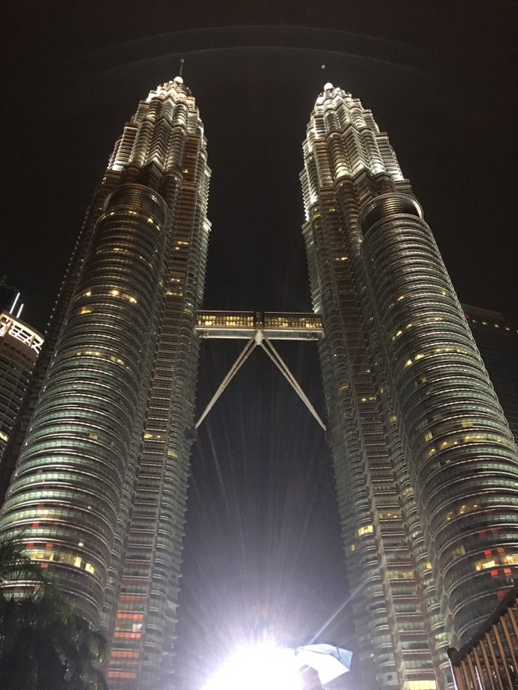

My Interest
Sport
    One of the sport that I always play is netball. I already played it since primary school
when I was 10 years old. Until now netball is one of my favourite sport.
I always join any competition or friendly if I have a chance.
There are others sports that I liked such as handball, badminton, swimming, wall climbing and more.
Photographer
     Next, I love to take a photo of my surrounding. This is several photo that I have been taken
during my free time.
The reasons why I love to take a photo because it make me feel healing and make my
mind feel more fresh.
I also love to edit the photos that have been taken from me after I already decide
what pictures that I love the most.
I usually edit the pictures using the VSCO, Adobe Photoshop, Adobe Lightroom, Picsart and others.